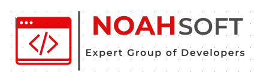

NOAH CORPORATION |
|
NOAHSOFT es una empresa dedicada al desarrollo y comercialización de software desde hace 3 años; está conformado por un grupo de estudiantes de la Universidad Técnica de Machala. NOAHSOFT siempre está a la vanguardia de la tecnología, ofreciendo un conjunto de soluciones tecnológicas para acompañar a cualquier industria que las necesite. Brindamos una solución total a empresas productoras, comercializadoras y de servicios con el mejor costo total de propiedad
En un mundo estrechamente interrelacionado por las tecnologías de información, ser líder global en la provisión de soluciones innovadoras de software.
Desarrollar una empresa dedicada a la creación e implementación de productos y servicios de software apoyándonos permanentemente en criterios innovadores y tecnologías en evolución. Para lograr estos objetivos es fundamental contar con un equipo de profesionales altamente capacitados, y con la motivación y compromiso necesarios para proveer un alto valor agregado a nuestros clientes. Buscando ser reconocidos y aceptados tanto por el aporte diferencial brindado por nuestros Productos y Servicios como por nuestra Cultura empresaria, priorizamos la mejora continua desarrollándose en un entorno profesional de negocios que asegure la evolución económica de largo plazo, en un clima de trabajo cordial que fomente la creatividad, el respeto por la ética comercial y por los valores humanos. Con la convicción que tanto el conocimiento y capacidad técnica como la calidad del servicio de atención al cliente son las que diferencian a las Empresas Líderes, ponemos todo el esfuerzo en mejorarlos sostenidamente.